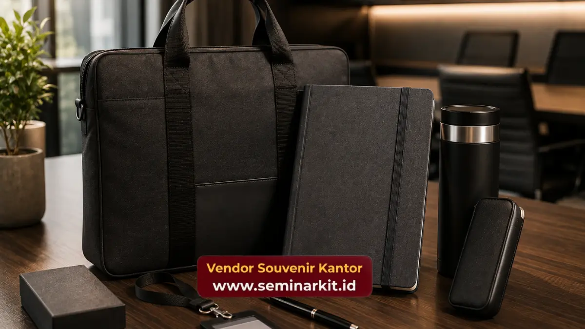

Isi seminar kit eksklusif umumnya terdiri dari tas, notebook, pulpen, dan tumbler dengan material premium yang dirancang untuk mendukung kenyamanan peserta selama acara.
Kombinasi item ini dipilih berdasarkan fungsi praktis sekaligus nilai estetika. Semakin tepat kombinasinya, semakin kuat kesan profesional yang tertanam di benak peserta.
- Tas, notebook, pulpen, dan tumbler menjadi empat item inti yang paling sering ditemukan dalam seminar kit eksklusif.
- Setiap item memiliki peran fungsional berbeda yang mendukung kenyamanan peserta selama acara berlangsung.
- Material dan finishing setiap item memengaruhi persepsi kualitas acara secara keseluruhan.
- Kombinasi item dapat disesuaikan dengan durasi dan format acara agar lebih relevan.
- Paket seminar kit eksklusif dengan isi lengkap kini tersedia melalui vendorsouvenirkantor.web.id.
Apa Saja Item Utama dalam Isi Seminar Kit Eksklusif?
Item utama dalam isi seminar kit eksklusif meliputi tas seminar sebagai wadah, notebook untuk mencatat, pulpen premium sebagai alat tulis, dan tumbler sebagai perlengkapan pendukung kenyamanan peserta.
Tas seminar berfungsi sebagai elemen pertama yang dilihat dan disentuh peserta saat proses registrasi. Bahan kanvas tebal atau kulit sintetis memberikan kesan kokoh dan tahan lama, sekaligus nyaman dibawa sepanjang acara berlangsung.
Desain tas yang ringkas namun cukup luas untuk menampung dokumen dan barang pribadi peserta menjadi pertimbangan penting.
Notebook menjadi item kedua yang paling sering digunakan aktif selama sesi berlangsung. Sampul hardcover dengan emboss logo memberi kesan formal, sementara kertas berkualitas memastikan kenyamanan menulis.
Pulpen premium melengkapi kebutuhan mencatat dengan sensasi genggaman yang nyaman untuk penggunaan jangka panjang selama sesi seminar yang biasanya berlangsung berjam-jam.
Bagaimana Tas Seminar Memengaruhi Kesan Pertama Peserta?
Tas seminar memengaruhi kesan pertama peserta karena menjadi item pertama yang diterima saat registrasi, sehingga kualitas material dan desainnya langsung mencerminkan standar penyelenggaraan acara.
Peserta cenderung menilai keseriusan sebuah acara dari detail kecil, termasuk jahitan tas, ketebalan bahan, dan kerapian cetak logo.
Tas dengan kualitas baik memberikan sinyal bahwa penyelenggara memperhatikan setiap aspek acara, bukan hanya konten materi seminar.
Selain fungsi estetika, tas seminar juga harus memenuhi aspek fungsional seperti kapasitas yang memadai untuk menampung notebook, dokumen, dan barang pribadi peserta.
Kombinasi antara tampilan premium dan fungsi praktis inilah yang membuat tas menjadi item paling berpengaruh dalam keseluruhan paket seminar kit.

Mengapa Notebook dan Alat Tulis Tetap Menjadi Item Wajib?
Notebook dan alat tulis tetap menjadi item wajib karena peserta membutuhkan media pencatatan langsung selama sesi berlangsung, meskipun materi digital sudah tersedia secara elektronik.
Meski era digital memungkinkan pencatatan melalui perangkat elektronik, banyak peserta seminar tetap memilih mencatat secara manual karena dianggap lebih membantu proses pemahaman dan mengingat materi.
Notebook dengan kualitas kertas baik dan sampul rapi turut memperkuat kesan profesional acara.
Pulpen sebagai pelengkap notebook juga tidak kalah penting. Pulpen dengan bobot seimbang dan tinta yang lancar membuat peserta lebih nyaman mencatat dalam waktu lama, sehingga pengalaman mengikuti seminar menjadi lebih optimal secara keseluruhan.
Apakah Tumbler dan Flashdisk Diperlukan dalam Setiap Paket?
Tumbler dan flashdisk tidak selalu wajib ada dalam setiap paket, namun kedua item ini memberikan nilai tambah signifikan terutama untuk acara dengan durasi panjang atau kebutuhan distribusi materi digital.
Tumbler menjadi item yang paling sering digunakan ulang oleh peserta setelah acara selesai, sehingga memperpanjang durasi paparan logo perusahaan di berbagai situasi sehari-hari.
Untuk acara dengan durasi satu hingga tiga hari, tumbler membantu menjaga kenyamanan peserta tanpa perlu bergantung pada kemasan minuman sekali pakai.
Flashdisk lebih relevan digunakan pada acara yang menyertakan materi presentasi dalam jumlah besar atau dokumen pendukung yang perlu disimpan secara offline.
Untuk acara yang materinya sudah dibagikan melalui email atau platform digital, item ini dapat digantikan dengan komponen lain yang lebih relevan dengan kebutuhan peserta.
Apakah Ukuran dan Warna Setiap Item Dapat Disesuaikan dengan Kebutuhan Acara?
Ukuran dan warna setiap item dalam seminar kit eksklusif umumnya dapat disesuaikan, mulai dari kapasitas tas, dimensi notebook, hingga palet warna yang selaras dengan identitas visual perusahaan.
Kapasitas tas menjadi salah satu aspek yang paling sering disesuaikan, mengingat kebutuhan peserta dapat berbeda tergantung jenis acara.
Acara yang menyertakan modul cetak dalam jumlah besar biasanya membutuhkan tas dengan kapasitas lebih luas, sementara acara dengan materi ringkas cukup menggunakan tas berukuran standar yang lebih ringkas dan mudah dibawa.
Warna item juga menjadi elemen penting dalam menjaga konsistensi visual antara seminar kit dengan tema acara secara keseluruhan.
Perusahaan dengan warna korporat yang khas, misalnya biru navy atau merah maroon, dapat menyesuaikan warna dasar tas, notebook, dan tumbler agar selaras dengan identitas tersebut, sehingga seluruh paket terlihat sebagai satu kesatuan yang terkurasi dengan baik.
Selain ukuran dan warna, detail seperti bentuk gagang tas, jenis resleting, atau tata letak saku dalam notebook juga dapat disesuaikan untuk mendukung kenyamanan penggunaan peserta selama acara berlangsung.
Semakin detail penyesuaian yang dilakukan, semakin kuat pula kesan personalisasi yang dirasakan oleh peserta saat menerima paket seminar kit tersebut.
Isi seminar kit eksklusif yang tepat mampu meningkatkan kenyamanan peserta sekaligus memperkuat citra profesional penyelenggara acara.
Dapatkan paket seminar kit dengan kombinasi item terbaik yang dapat disesuaikan dengan kebutuhan acara perusahaan Anda melalui vendorsouvenirkantor.web.id.

Banner promosi: klik gambar untuk langsung terhubung ke WhatsApp tim sales.